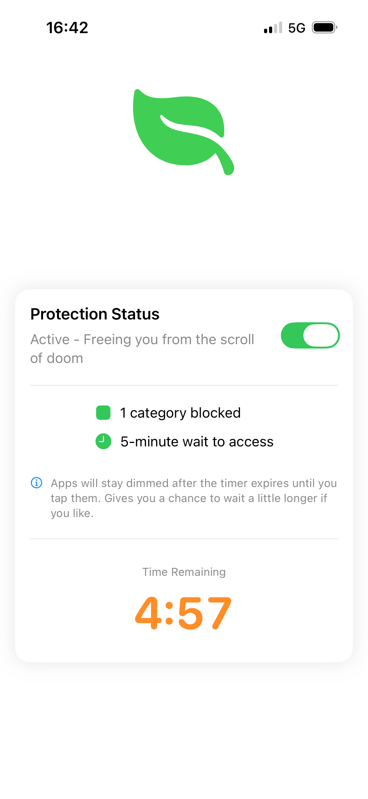
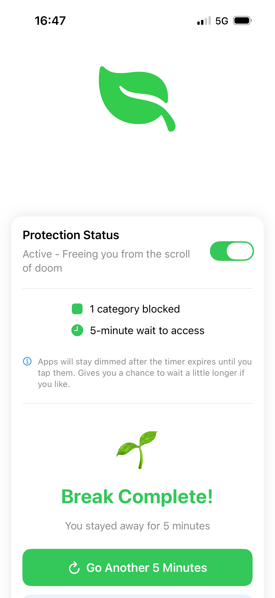
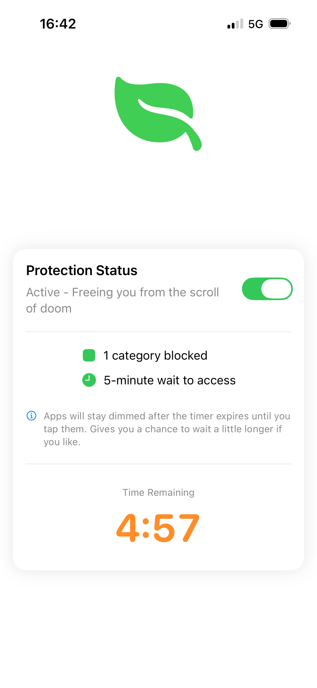
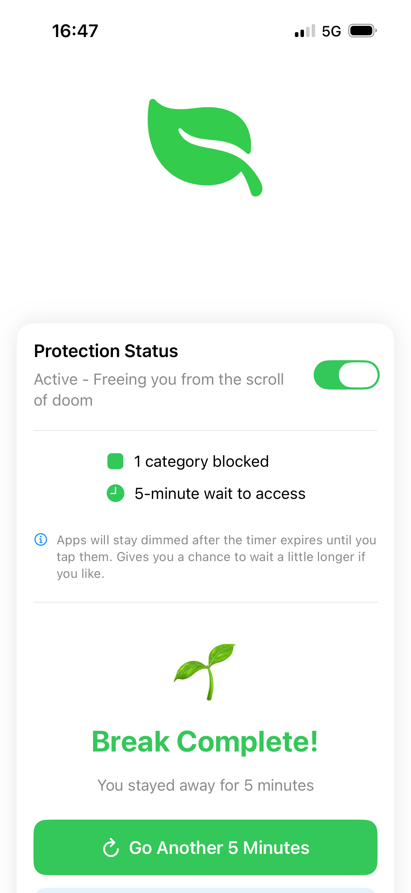

Doomscroll Stopper
Small interventions which break compulsive scrolling and let's your mind breathe.
You have the power to end the scroll of doom!
Doomscroll Stopper. It's about choice. We all know the feeling - you open an app "just for a minute" and suddenly an hour has passed. Doomscroll Stopper gives you that crucial moment to pause and ask: "Is this really how I want to spend my time?" The 5-minute cooldown isn't a restriction. It's a gift of time back to yourself.
- Choose the app that pulls you in the most.
- Take a five minute breather. Choose to reset the timer or end the break.
- Runs locally — no data required


 


